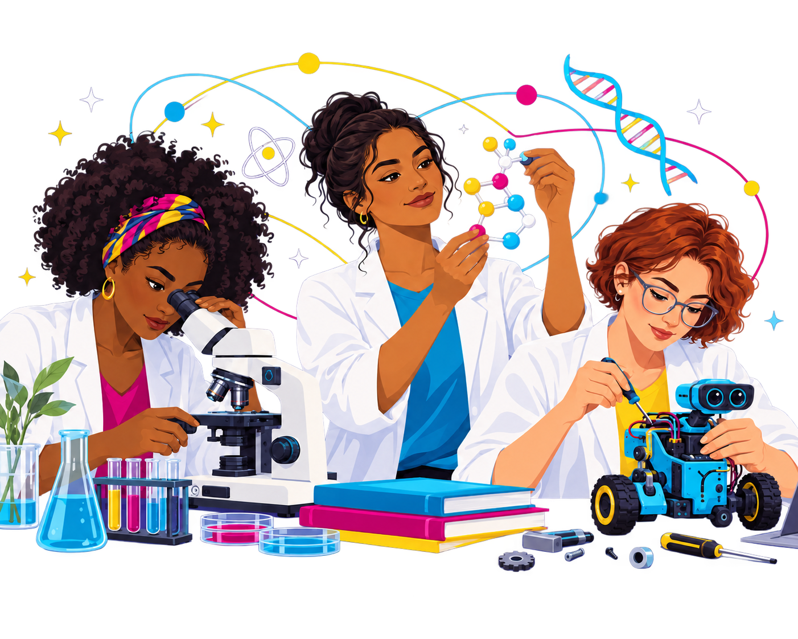

Mulheres que transformaram o mundo através da ciência.
Conheça histórias de mulheres que fizeram descobertas importantes,
superaram desafios e ajudaram a construir o conhecimento científico.

A informática evoluiu através da criatividade e da curiosidade
de pessoas que ousaram imaginar novas possibilidades.
Conheça mulheres que contribuíram para a programação, engenharia de software, redes de computadores e desenvolvimento da tecnologia moderna.